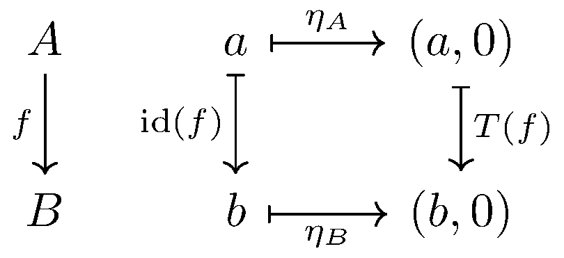
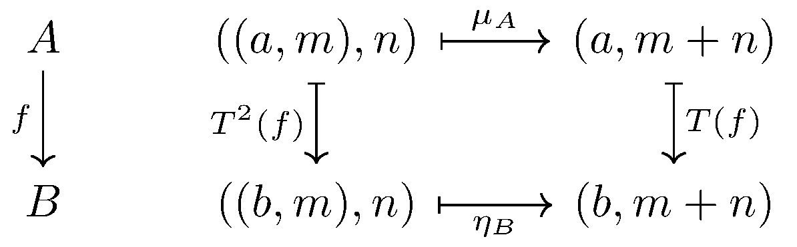
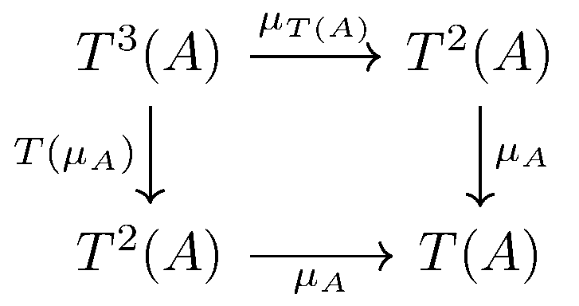
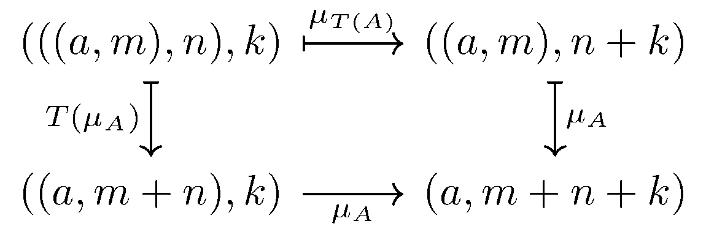
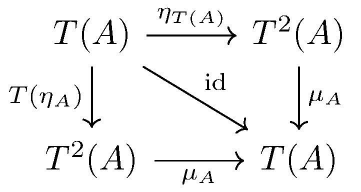
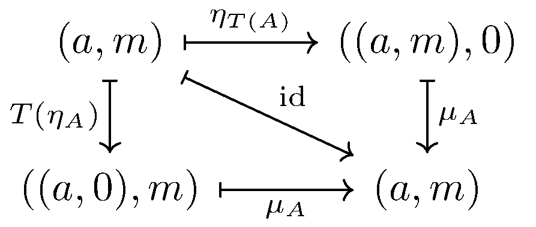

February 5th
Today I learned a concrete example of a monad, courtesy of Alexander Burton. As usual in functional programming, we are looking at functions as functors in the category of types.
Fixing a monoid $(M,+),$ we define $T:A\mapsto A\times M$ to be our monad. To be explicit, this is endofunctor taking\[\begin{cases} T(A)=A\times M & A\text{ object}, \\ T(f)=f\times\op{id} & f:A\to B.\end{cases}\]We note quickly that we tend to think of $T(f)$ as $\texttt{fmap}$ in Haskell, for it takes $(A\to B)\to(T(A)\to T(B)).$ Fixing $0\in M$ as our identity element, we remark that this definition permits\[\eta_A(a)=(a,0)\]for $a\in A.$ Very quickly, we see $\eta_A:A\to T(A)$ ($\texttt{pure}$) is a natural transformation from $\op{id}$ to $T(\op{id})$ by chasing elements, as shown in the following commutative diagram. Here, $f:A\to B$ takes $f(a)=b.$
This works because $T(f)$ was defined cleanly. The final piece of data is a natural transformation $\mu_A:T^2(A)\to T(A)$ ($\texttt{join}$), which we define by\[\mu_A((a,m),n)=(a,m+n).\]This is actually a natural transformation, again by chasing elements in the following commutative diagram. Here, $f:A\to B$ takes $f(a)=b.$
Again, $T(f)$ being clean makes this natural.
It remains to show the coherence laws. The goal of this example is to explain why $\mu\circ T\mu=\mu\circ\mu T$ corresponds to associativity and $\mu\circ T\eta=\mu\circ\eta T=\op{id}$ corresponds to identity. It is somewhat magical to see morphisms able to communicate this.
We begin with associativity. We need to show that the following diagram commutes.
As usual, this is done by chasing elements. We expand out $T$ and the rest of the morphisms they map to in the following diagram.
Here, the bottom arrow gives $(a,(m+n)+k),$ and the left arrow gives $(a,m+(n+k)),$ and these are equal exactly when $+$ associates. So this coherence law holds exactly because our monoid is associative.
Now we do identity. We need to show that the following diagram commutes.
Of course, we show this by chasing element, as seen in the following diagram.
Here, the bottom arrow gives $(a,0+m),$ the right arrow gives $(a,m+0),$ and the diagonal arrow gives $(a,m).$ However, these are all equal exactly because our monoid as $0$ as identity. So we get out coherence law due to identity. This completes the proof that we have a monad.